Inflation: the complete model-comparison workflow
1 The data and the scope of the comparison
This chapter develops the inflation analysis in the original repository: correlations, ordinary least squares, Lasso and Elastic Net, best-subset selection, adaptive penalties, Bayesian model averaging, and the fdaSP implementation. The one-lag specification uses 18 macroeconomic predictors; the four-lag specification uses all 72 predictor columns.
These are full-sample model-comparison exercises. Random-fold cross-validation is retained from the original workflow and must not be interpreted as a real-time forecasting assessment. The separate chronological analysis later in this guide uses training, validation and test periods.
The repository relates the data to the inflation application discussed by Bernardi et al. (2024). We retain the supplied transformations rather than reconstructing them from raw economic series. Inspecting the supplied file reveals 125 observations, from July 1991 to July 2022. The older prose mentioned 2023-Q4, but that endpoint is not present in this data file. The response used below is CPIAUCSL; CPILFESL, mentioned in the old introduction, is not a column in this version of the dataset.
library(fdaSP)
library(ggplot2)
stopifnot(all(vapply(c("glmnet","leaps","BMS","corrplot"),
requireNamespace,logical(1),quietly=TRUE)))
original_data <- new.env()
load("../data/inflation-Q.RData",envir=original_data)
inflation <- original_data$infl.data
y_original <- as.numeric(inflation$CPIAUCSL)
lag1_names <- grep("_l1$",names(inflation),value=TRUE)
all_lag_names <- grep("_l[1-4]$",names(inflation),value=TRUE)
X1 <- as.matrix(inflation[,lag1_names])
X4 <- as.matrix(inflation[,all_lag_names])
stopifnot(ncol(X1)==18L,ncol(X4)==72L,
all(is.finite(X4)),all(is.finite(y_original)))
data.frame(observations=nrow(inflation),first=min(inflation$DATE),
last=max(inflation$DATE),one_lag=ncol(X1),four_lags=ncol(X4))## observations first last one_lag four_lags
## 1 125 1991-07 2022-07 18 72All results and figures below are regenerated by the guide. The packages glmnet, leaps, BMS and corrplot are additional dependencies of this application, not additional dependencies imposed on fdaSP itself.
2 Preliminary correlations and one-lag OLS
As in the original example, the correlation plot uses inflation and the first lag of each macroeconomic indicator. Standardization does not change these correlations. Ellipses reveal both their sign and strength.
X1_scaled <- scale(X1)
y_original_scaled <- drop(scale(y_original))
correlation_data <- cbind(INFL=y_original_scaled,X1_scaled)
correlation_matrix <- cor(correlation_data)
corrplot::corrplot(correlation_matrix,order="AOE",method="ellipse",
type="upper",tl.cex=.65,tl.col="#333333",mar=c(0,0,1,0))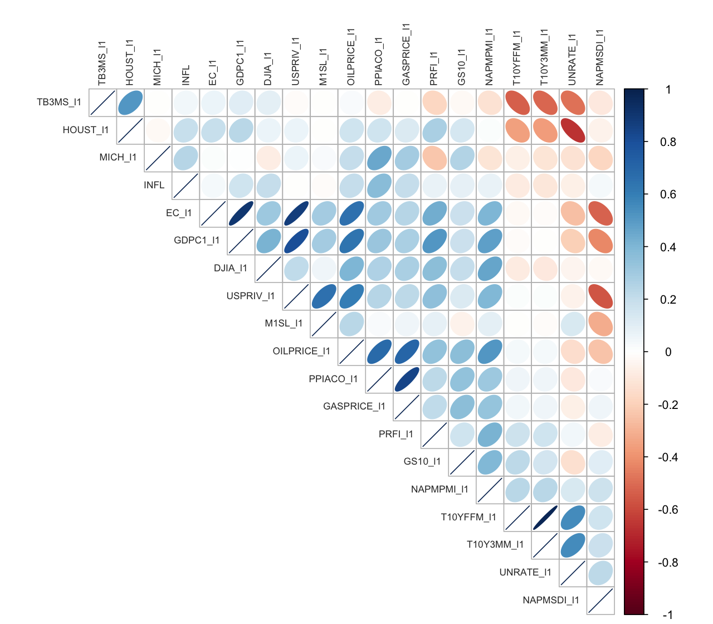
Inflation and the 18 first-lag macroeconomic predictors. Variables are ordered by the angular order of eigenvectors (AOE), as in the original analysis.
The OLS specification includes an intercept and all 18 first-lag regressors. The summary reproduces the coefficient estimates and conventional standard errors of the original workflow. These standard errors do not correct for serial dependence or subsequent model selection.
formula1 <- reformulate(lag1_names,response="CPIAUCSL")
ols1 <- lm(formula1,data=inflation)
summary(ols1)##
## Call:
## lm(formula = formula1, data = inflation)
##
## Residuals:
## Min 1Q Median 3Q Max
## -0.072883 -0.009561 0.000992 0.009983 0.055086
##
## Coefficients:
## Estimate Std. Error t value Pr(>|t|)
## (Intercept) -0.1189228 0.0788791 -1.508 0.13462
## UNRATE_l1 0.2750190 0.1949427 1.411 0.16124
## EC_l1 -0.3418655 0.4007397 -0.853 0.39554
## PRFI_l1 -0.0857397 0.0754146 -1.137 0.25814
## GDPC1_l1 1.4171099 0.4380447 3.235 0.00162 **
## HOUST_l1 0.0167668 0.0098992 1.694 0.09325 .
## USPRIV_l1 -0.4435282 0.3811955 -1.164 0.24723
## TB3MS_l1 -0.1152165 0.1411862 -0.816 0.41630
## GS10_l1 -0.0005272 0.0058215 -0.091 0.92802
## T10Y3MM_l1 -0.7562681 0.9247730 -0.818 0.41531
## T10YFFM_l1 0.4674876 0.8931897 0.523 0.60179
## M1SL_l1 0.0123492 0.0151375 0.816 0.41645
## MICH_l1 0.2451893 0.4095280 0.599 0.55064
## PPIACO_l1 0.0029549 0.0009022 3.275 0.00143 **
## DJIA_l1 0.0373644 0.0417599 0.895 0.37295
## NAPMPMI_l1 -0.0003125 0.0009606 -0.325 0.74562
## NAPMSDI_l1 -0.0002199 0.0006791 -0.324 0.74675
## OILPRICE_l1 0.0126106 0.0195869 0.644 0.52108
## GASPRICE_l1 -0.0302853 0.0135122 -2.241 0.02709 *
## ---
## Signif. codes: 0 '***' 0.001 '**' 0.01 '*' 0.05 '.' 0.1 ' ' 1
##
## Residual standard error: 0.02167 on 106 degrees of freedom
## Multiple R-squared: 0.3408, Adjusted R-squared: 0.2288
## F-statistic: 3.044 on 18 and 106 DF, p-value: 0.00018893 Lasso and Elastic Net with glmnet
glmnet computes penalized paths using coordinate descent (Friedman, Hastie, and Tibshirani 2010). We retain the Lasso path and the Elastic Net comparison with mixing parameter \(\alpha=0.5\), and also show Lasso CV explicitly. Both CV fits use the same ten folds. Each refit uses the same predictor set and mixing parameter as the CV fit that selected its tuning parameter.
set.seed(42)
folds1 <- sample(rep(seq_len(10),length.out=length(y_original)))
lasso1 <- glmnet::glmnet(X1,y_original,alpha=1,standardize=TRUE,nlambda=100)
cv_lasso1 <- glmnet::cv.glmnet(X1,y_original,alpha=1,standardize=TRUE,
nlambda=100,foldid=folds1)
cv_enet1 <- glmnet::cv.glmnet(X1,y_original,alpha=.5,standardize=TRUE,
nlambda=100,foldid=folds1)
enet1_selected <- glmnet::glmnet(X1,y_original,alpha=.5,standardize=TRUE,
lambda=cv_enet1$lambda.min)For plotting, we keep the coefficient paths on their original response scale and display \(\lambda\) on a logarithmic axis. The helper below retains predictor names, which are useful when inspecting selected variables.
glmnet_path_data <- function(object,label) {
b <- as.matrix(object$beta)
data.frame(lambda=rep(object$lambda,each=nrow(b)),
coefficient=as.vector(b),
term=rep(rownames(b),times=ncol(b)),method=label)
}
glmnet_cv_data <- function(object,label) {
data.frame(lambda=object$lambda,mse=object$cvm,se=object$cvsd,method=label)
}
selected_coefficients <- function(object,rule,label) {
b <- as.matrix(coef(object,s=rule))
keep <- b[,1]!=0
data.frame(method=label,rule=rule,term=rownames(b)[keep],
coefficient=as.numeric(b[keep,1]),row.names=NULL)
}ggplot(glmnet_path_data(lasso1,"Lasso"),aes(lambda,coefficient,group=term)) +
geom_line(colour="#9e1b32",alpha=.65) + scale_x_log10() +
labs(x=expression(lambda),y="Coefficient")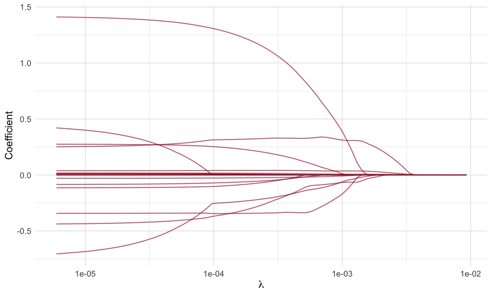
One-lag Lasso coefficient paths from glmnet; each line represents one macroeconomic regressor.
one_cv <- rbind(glmnet_cv_data(cv_lasso1,"Lasso"),
glmnet_cv_data(cv_enet1,"Elastic Net"))
one_cv_choices <- data.frame(method=c("Lasso","Elastic Net"),
lambda=c(cv_lasso1$lambda.min,cv_enet1$lambda.min))
ggplot(one_cv,aes(lambda,mse)) +
geom_ribbon(aes(ymin=mse-se,ymax=mse+se),fill="#9e1b32",alpha=.15) +
geom_line(colour="#9e1b32") +
geom_vline(data=one_cv_choices,aes(xintercept=lambda),linetype=2) +
facet_wrap(~method,scales="free_x") + scale_x_log10() +
labs(x=expression(lambda),y="Cross-validated MSE")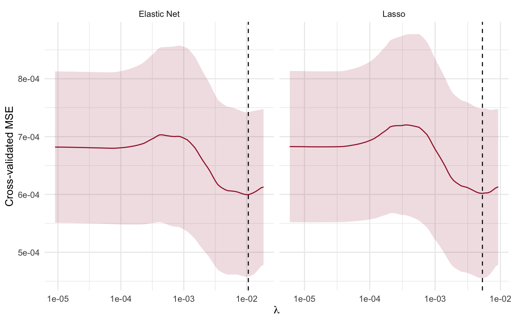
Ten-fold CV for one-lag Lasso and Elastic Net. Ribbons show the CV mean plus or minus the standard error returned by glmnet; dashed lines mark lambda.min.
lambda.min minimizes the CV error. lambda.1se is the largest candidate within one standard error of that minimum. We name the choice explicitly rather than relying on the default of coef().
one_selected <- rbind(
selected_coefficients(cv_lasso1,"lambda.min","Lasso"),
selected_coefficients(cv_lasso1,"lambda.1se","Lasso"),
selected_coefficients(cv_enet1,"lambda.min","Elastic Net"),
selected_coefficients(cv_enet1,"lambda.1se","Elastic Net"))
knitr::kable(one_selected,digits=5)| method | rule | term | coefficient |
|---|---|---|---|
| Lasso | lambda.min | (Intercept) | 0.02455 |
| Lasso | lambda.min | PPIACO_l1 | 0.00079 |
| Lasso | lambda.1se | (Intercept) | 0.02544 |
| Elastic Net | lambda.min | (Intercept) | 0.02471 |
| Elastic Net | lambda.min | PPIACO_l1 | 0.00065 |
| Elastic Net | lambda.1se | (Intercept) | 0.02544 |
stopifnot(max(abs(as.matrix(coef(enet1_selected))-
as.matrix(coef(cv_enet1,s="lambda.min"))))<1e-3)4 Exhaustive best-subset selection
The original best-subset analysis searches models of size one through eight, using the 18 first-lag predictors. This is an exhaustive search within that size range, not a search restricted to the first eight variables. The intercept is included in every model.
subset_fit <- leaps::regsubsets(x=X1_scaled,y=y_original_scaled,
method="exhaustive",nvmax=8)
subset_summary <- summary(subset_fit)
subset_summary## Subset selection object
## 18 Variables (and intercept)
## Forced in Forced out
## UNRATE_l1 FALSE FALSE
## EC_l1 FALSE FALSE
## PRFI_l1 FALSE FALSE
## GDPC1_l1 FALSE FALSE
## HOUST_l1 FALSE FALSE
## USPRIV_l1 FALSE FALSE
## TB3MS_l1 FALSE FALSE
## GS10_l1 FALSE FALSE
## T10Y3MM_l1 FALSE FALSE
## T10YFFM_l1 FALSE FALSE
## M1SL_l1 FALSE FALSE
## MICH_l1 FALSE FALSE
## PPIACO_l1 FALSE FALSE
## DJIA_l1 FALSE FALSE
## NAPMPMI_l1 FALSE FALSE
## NAPMSDI_l1 FALSE FALSE
## OILPRICE_l1 FALSE FALSE
## GASPRICE_l1 FALSE FALSE
## 1 subsets of each size up to 8
## Selection Algorithm: exhaustive
## UNRATE_l1 EC_l1 PRFI_l1 GDPC1_l1 HOUST_l1 USPRIV_l1 TB3MS_l1 GS10_l1
## 1 ( 1 ) " " " " " " " " " " " " " " " "
## 2 ( 1 ) " " " " " " " " " " " " " " " "
## 3 ( 1 ) " " "*" " " "*" " " " " " " " "
## 4 ( 1 ) " " "*" " " "*" " " " " " " " "
## 5 ( 1 ) " " "*" " " "*" " " " " " " " "
## 6 ( 1 ) " " "*" " " "*" "*" " " " " " "
## 7 ( 1 ) " " "*" "*" "*" "*" " " " " " "
## 8 ( 1 ) " " "*" "*" "*" "*" " " " " " "
## T10Y3MM_l1 T10YFFM_l1 M1SL_l1 MICH_l1 PPIACO_l1 DJIA_l1 NAPMPMI_l1
## 1 ( 1 ) " " " " " " " " "*" " " " "
## 2 ( 1 ) " " " " " " " " "*" " " " "
## 3 ( 1 ) " " " " " " " " "*" " " " "
## 4 ( 1 ) " " " " " " " " "*" " " " "
## 5 ( 1 ) "*" " " " " " " "*" " " " "
## 6 ( 1 ) "*" " " " " " " "*" " " " "
## 7 ( 1 ) " " " " " " " " "*" "*" " "
## 8 ( 1 ) " " " " " " " " "*" "*" "*"
## NAPMSDI_l1 OILPRICE_l1 GASPRICE_l1
## 1 ( 1 ) " " " " " "
## 2 ( 1 ) " " " " "*"
## 3 ( 1 ) " " " " " "
## 4 ( 1 ) " " " " "*"
## 5 ( 1 ) " " " " "*"
## 6 ( 1 ) " " " " "*"
## 7 ( 1 ) " " " " "*"
## 8 ( 1 ) " " " " "*"subset_criteria <- data.frame(size=seq_along(subset_summary$bic),
BIC=subset_summary$bic,
Cp=subset_summary$cp,RSS=subset_summary$rss)
best_subset_size <- which.min(subset_summary$bic)
subset_coefficients <- coef(subset_fit,id=best_subset_size)
subset_terms <- setdiff(names(subset_coefficients),"(Intercept)")
subset_data <- data.frame(response=y_original_scaled,X1_scaled,check.names=FALSE)
subset_refit <- lm(reformulate(subset_terms,response="response"),data=subset_data)
coef(subset_refit)## (Intercept) EC_l1 GDPC1_l1 PPIACO_l1 GASPRICE_l1
## 3.912813e-16 -6.958761e-01 6.777184e-01 7.424334e-01 -4.390489e-01stopifnot(max(abs(coef(subset_refit)[names(subset_coefficients)]-
subset_coefficients))<1e-7)subset_plot <- data.frame(size=rep(subset_criteria$size,3),
value=c(subset_criteria$BIC,subset_criteria$Cp,subset_criteria$RSS),
criterion=rep(c("BIC","Mallows' Cp","RSS"),each=nrow(subset_criteria)))
ggplot(subset_plot,aes(size,value)) + geom_line(colour="#9e1b32") +
geom_point() + facet_wrap(~criterion,scales="free_y") +
scale_x_continuous(breaks=1:8) + labs(x="Number of regressors",y=NULL)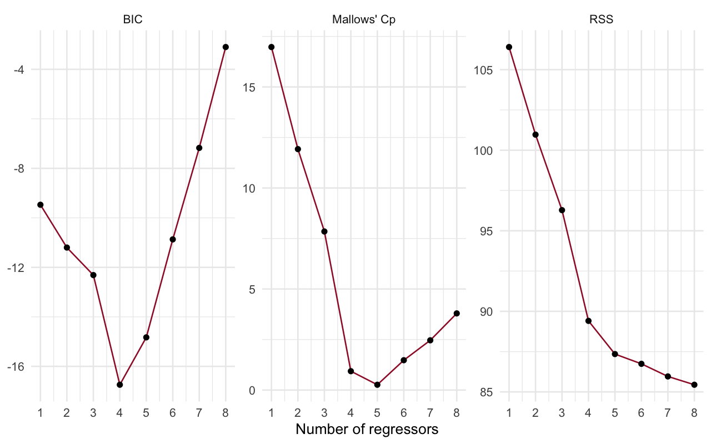
BIC, Mallows’ Cp and residual sum of squares for the best subset at each size. Separate vertical scales avoid comparing unlike criteria numerically.
The selected subset contains 4 regressors. These coefficients are on standardized scales, unlike the raw-scale OLS table above. The comparison is descriptive: neither the subset search nor its printed OLS standard errors account automatically for selection uncertainty.
5 Ridge and OLS pilots for adaptive Lasso
We restore both pilot constructions. The original code computed ridge and OLS weights but used only the OLS weights in its adaptive-Lasso fit; here both are fitted and displayed. A small explicit floor prevents division by zero when constructing inverse absolute-value weights.
set.seed(1234)
folds_adaptive <- sample(rep(seq_len(10),length.out=length(y_original)))
cv_ridge1 <- glmnet::cv.glmnet(X1,y_original,alpha=0,standardize=TRUE,
foldid=folds_adaptive,type.measure="mse")
cv_ridge1##
## Call: glmnet::cv.glmnet(x = X1, y = y_original, type.measure = "mse", foldid = folds_adaptive, alpha = 0, standardize = TRUE)
##
## Measure: Mean-Squared Error
##
## Lambda Index Measure SE Nonzero
## min 0.170 44 0.0006057 0.0001089 18
## 1se 9.259 1 0.0006167 0.0001174 18ridge_pilot <- as.matrix(coef(cv_ridge1,s="lambda.min"))[-1,1]
ols_pilot <- coef(ols1)[colnames(X1)]
weight_floor <- 1e-8
ridge_weights <- 1/pmax(abs(ridge_pilot),weight_floor)
ols_weights <- 1/pmax(abs(ols_pilot),weight_floor)
pilot_table <- data.frame(term=colnames(X1),ridge=ridge_pilot,OLS=ols_pilot,
ridge_weight=ridge_weights,OLS_weight=ols_weights)
knitr::kable(pilot_table,digits=5,row.names=FALSE)| term | ridge | OLS | ridge_weight | OLS_weight |
|---|---|---|---|---|
| UNRATE_l1 | -0.00464 | 0.27502 | 215.38004 | 3.63611 |
| EC_l1 | -0.00213 | -0.34187 | 470.08553 | 2.92513 |
| PRFI_l1 | 0.00335 | -0.08574 | 298.56300 | 11.66321 |
| GDPC1_l1 | 0.03447 | 1.41711 | 29.00936 | 0.70566 |
| HOUST_l1 | 0.00152 | 0.01677 | 659.85959 | 59.64177 |
| USPRIV_l1 | -0.00594 | -0.44353 | 168.33408 | 2.25465 |
| TB3MS_l1 | 0.00391 | -0.11522 | 255.65726 | 8.67931 |
| GS10_l1 | 0.00032 | -0.00053 | 3125.98328 | 1896.94585 |
| T10Y3MM_l1 | -0.02310 | -0.75627 | 43.28138 | 1.32228 |
| T10YFFM_l1 | -0.01681 | 0.46749 | 59.48810 | 2.13909 |
| M1SL_l1 | -0.00020 | 0.01235 | 4930.11479 | 80.97719 |
| MICH_l1 | 0.09890 | 0.24519 | 10.11097 | 4.07848 |
| PPIACO_l1 | 0.00020 | 0.00295 | 4981.31878 | 338.41853 |
| DJIA_l1 | 0.00862 | 0.03736 | 116.04012 | 26.76343 |
| NAPMPMI_l1 | 0.00003 | -0.00031 | 33884.13136 | 3200.50282 |
| NAPMSDI_l1 | 0.00003 | -0.00022 | 30596.32843 | 4547.79910 |
| OILPRICE_l1 | 0.00198 | 0.01261 | 505.45799 | 79.29836 |
| GASPRICE_l1 | 0.00133 | -0.03029 | 751.93915 | 33.01928 |
cv_adaptive_ols <- glmnet::cv.glmnet(X1,y_original,alpha=1,
standardize=TRUE,foldid=folds_adaptive,type.measure="mse",penalty.factor=ols_weights)
cv_adaptive_ridge <- glmnet::cv.glmnet(X1,y_original,alpha=1,
standardize=TRUE,foldid=folds_adaptive,type.measure="mse",penalty.factor=ridge_weights)These CV curves retain the original fixed full-sample pilot workflow: the pilots are not recomputed inside validation folds. Consequently they compare penalties conditional on those estimated weights, rather than providing leakage-free validation of the complete adaptive procedure. glmnet also rescales penalty.factor internally, so raw tuning values should not be equated with tuning values from a different solver without aligning its normalization.
adaptive_cv_plot <- rbind(glmnet_cv_data(cv_adaptive_ols,"OLS pilot"),
glmnet_cv_data(cv_adaptive_ridge,"Ridge pilot"))
ggplot(adaptive_cv_plot,aes(lambda,mse)) +
geom_ribbon(aes(ymin=mse-se,ymax=mse+se),fill="#9e1b32",alpha=.15) +
geom_line(colour="#9e1b32") + facet_wrap(~method,scales="free_x") +
scale_x_log10() + labs(x=expression(lambda),y="Cross-validated MSE")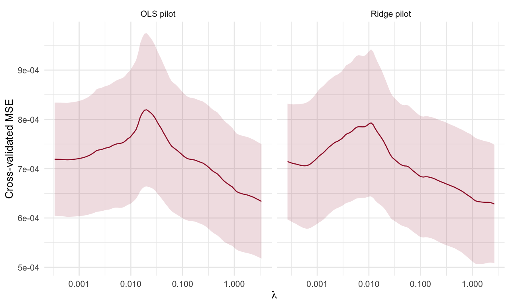
CV curves for adaptive Lasso using OLS and ridge pilots, with full-sample weights held fixed throughout CV.
adaptive_paths <- rbind(glmnet_path_data(cv_adaptive_ols$glmnet.fit,"OLS pilot"),
glmnet_path_data(cv_adaptive_ridge$glmnet.fit,"Ridge pilot"))
adaptive_choices <- data.frame(method=rep(c("OLS pilot","Ridge pilot"),each=2),
rule=rep(c("lambda.min","lambda.1se"),2),
lambda=c(cv_adaptive_ols$lambda.min,cv_adaptive_ols$lambda.1se,
cv_adaptive_ridge$lambda.min,cv_adaptive_ridge$lambda.1se))
ggplot(adaptive_paths,aes(lambda,coefficient,group=term)) +
geom_line(colour="#9e1b32",alpha=.6) +
geom_vline(data=adaptive_choices,aes(xintercept=lambda,linetype=rule),inherit.aes=FALSE) +
scale_linetype_manual(values=c("lambda.min"="dashed","lambda.1se"="dotted")) +
facet_wrap(~method,scales="free_x") + scale_x_log10() +
labs(x=expression(lambda),y="Coefficient",linetype="CV rule")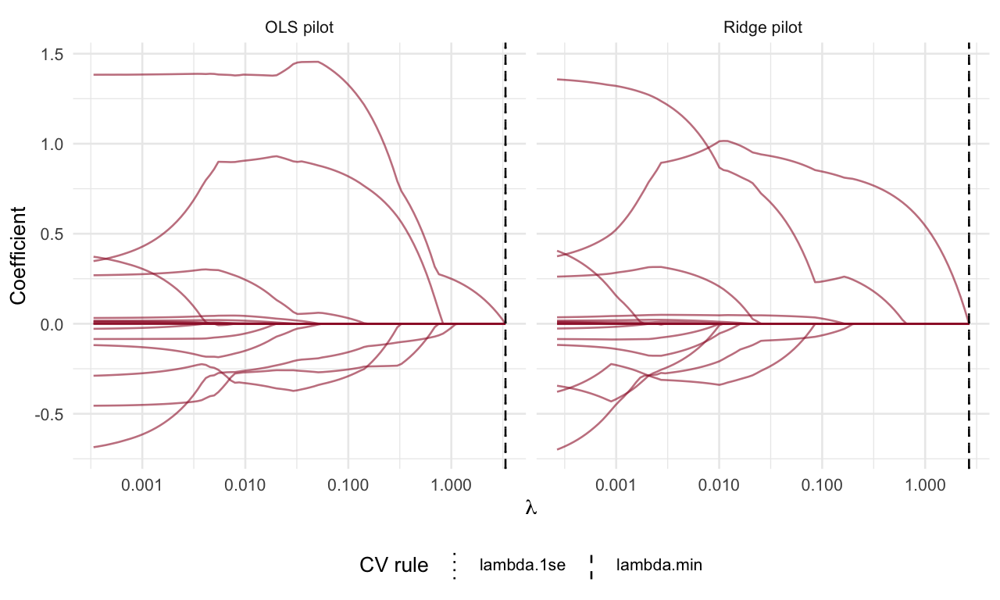
Adaptive coefficient paths for the two pilots. Dashed and dotted lines mark lambda.min and lambda.1se, respectively.
adaptive_selected <- rbind(
selected_coefficients(cv_adaptive_ols,"lambda.1se","OLS pilot"),
selected_coefficients(cv_adaptive_ridge,"lambda.1se","Ridge pilot"))
knitr::kable(adaptive_selected,digits=5)| method | rule | term | coefficient |
|---|---|---|---|
| OLS pilot | lambda.1se | (Intercept) | 0.02544 |
| Ridge pilot | lambda.1se | (Intercept) | 0.02544 |
6 Bayesian model averaging: simulation and full enumeration
We restore both BMS analyses: reversible-jump model sampling and enumeration of all \(2^{18}=262{,}144\) subsets. Both use a uniform prior over models and the same unit-information prior (g="UIP"). The sampled run uses 10,000 burn-in iterations followed by 50,000 iterations, matching the original settings (Zeugner and Feldkircher 2015).
BMS_data <- data.frame(response=y_original,X1,check.names=FALSE)
set.seed(417)
bma_sample <- BMS::bms(BMS_data,burn=10000,iter=50000,
mprior="uniform",g="UIP",mcmc="rev.jump",nmodel=100,
user.int=FALSE,logfile=FALSE)
bma_enumeration <- BMS::bms(BMS_data,mprior="uniform",g="UIP",
mcmc="enumerate",nmodel=100,user.int=FALSE,logfile=FALSE)
summary(bma_sample)## Mean no. regressors Draws Burnins Time
## "5.3674" "50000" "10000" "1.095494 secs"
## No. models visited Modelspace 2^K % visited % Topmodels
## "13799" "262144" "5.3" "60"
## Corr PMP No. Obs. Model Prior g-Prior
## "0.9947" "125" "uniform / 9" "UIP"
## Shrinkage-Stats
## "Av=0.9921"summary(bma_enumeration)## Mean no. regressors Draws Burnins Time
## "5.3906" "262144" "0" "4.960132 secs"
## No. models visited Modelspace 2^K % visited % Topmodels
## "262144" "262144" "100" "0.038"
## Corr PMP No. Obs. Model Prior g-Prior
## "NA" "125" "uniform / 9" "UIP"
## Shrinkage-Stats
## "Av=0.9921"The original comment referred to the 100 best models, while the code retained only ten. We now retain 100 explicitly. Three quantities must be distinguished: MCMC-frequency summaries, full-enumeration summaries, and summaries restricted to the retained best models. In BMS, exact=TRUE uses the marginal-likelihood weights of those retained models; it does not automatically mean averaging over the entire model space.
bma_sample_coef <- coef(bma_sample,exact=FALSE,order.by.pip=FALSE,
include.constant=FALSE,std.coefs=FALSE)
bma_full_coef <- coef(bma_enumeration,exact=FALSE,order.by.pip=FALSE,
include.constant=FALSE,std.coefs=FALSE)
bma_top100_coef <- coef(bma_sample,exact=TRUE,order.by.pip=FALSE,
include.constant=TRUE,std.coefs=FALSE)
knitr::kable(bma_top100_coef,digits=5,
caption="Posterior coefficient summaries restricted to the 100 best retained models, including the intercept.")| PIP | Post Mean | Post SD | Cond.Pos.Sign | Idx | |
|---|---|---|---|---|---|
| UNRATE_l1 | 0.05179 | -0.00322 | 0.03094 | 0.19814 | 1 |
| EC_l1 | 0.90379 | -0.68434 | 0.29728 | 0.00000 | 2 |
| PRFI_l1 | 0.04443 | -0.00153 | 0.01413 | 0.00000 | 3 |
| GDPC1_l1 | 0.96643 | 1.34077 | 0.45575 | 1.00000 | 4 |
| HOUST_l1 | 0.13673 | 0.00109 | 0.00349 | 1.00000 | 5 |
| USPRIV_l1 | 0.12428 | -0.04722 | 0.16812 | 0.00000 | 6 |
| TB3MS_l1 | 0.05749 | 0.00411 | 0.02994 | 1.00000 | 7 |
| GS10_l1 | 0.03052 | 0.00000 | 0.00081 | 0.33776 | 8 |
| T10Y3MM_l1 | 0.17266 | -0.05061 | 0.16110 | 0.00000 | 9 |
| T10YFFM_l1 | 0.12616 | -0.01865 | 0.12729 | 0.07040 | 10 |
| M1SL_l1 | 0.08661 | 0.00142 | 0.00637 | 0.93213 | 11 |
| MICH_l1 | 0.05908 | 0.01486 | 0.09867 | 1.00000 | 12 |
| PPIACO_l1 | 1.00000 | 0.00345 | 0.00085 | 1.00000 | 13 |
| DJIA_l1 | 0.08502 | 0.00302 | 0.01404 | 1.00000 | 14 |
| NAPMPMI_l1 | 0.05950 | -0.00003 | 0.00021 | 0.00000 | 15 |
| NAPMSDI_l1 | 0.04617 | -0.00001 | 0.00012 | 0.00000 | 16 |
| OILPRICE_l1 | 0.05475 | 0.00062 | 0.00506 | 0.95420 | 17 |
| GASPRICE_l1 | 0.92546 | -0.03106 | 0.01401 | 0.00000 | 18 |
| (Intercept) | 1.00000 | 0.01142 | NA | NA | 0 |
bma_comparison <- data.frame(term=rownames(bma_full_coef),
PIP_sample=bma_sample_coef[,"PIP"],PIP_enumeration=bma_full_coef[,"PIP"],
mean_sample=bma_sample_coef[,"Post Mean"],mean_enumeration=bma_full_coef[,"Post Mean"])
knitr::kable(bma_comparison,digits=5,row.names=FALSE)| term | PIP_sample | PIP_enumeration | mean_sample | mean_enumeration |
|---|---|---|---|---|
| UNRATE_l1 | 0.09848 | 0.10047 | -0.00101 | -0.00025 |
| EC_l1 | 0.81932 | 0.80218 | -0.60495 | -0.58967 |
| PRFI_l1 | 0.09520 | 0.09625 | -0.00301 | -0.00295 |
| GDPC1_l1 | 0.90182 | 0.89632 | 1.22489 | 1.21241 |
| HOUST_l1 | 0.18288 | 0.18305 | 0.00150 | 0.00152 |
| USPRIV_l1 | 0.19478 | 0.20818 | -0.06624 | -0.07604 |
| TB3MS_l1 | 0.10176 | 0.09990 | 0.00500 | 0.00490 |
| GS10_l1 | 0.08040 | 0.08465 | -0.00004 | -0.00004 |
| T10Y3MM_l1 | 0.20180 | 0.20501 | -0.06692 | -0.07006 |
| T10YFFM_l1 | 0.14888 | 0.15567 | -0.00891 | -0.00756 |
| M1SL_l1 | 0.13514 | 0.15394 | 0.00171 | 0.00207 |
| MICH_l1 | 0.11478 | 0.11874 | 0.03428 | 0.03551 |
| PPIACO_l1 | 0.99646 | 0.99645 | 0.00327 | 0.00327 |
| DJIA_l1 | 0.13996 | 0.14490 | 0.00547 | 0.00567 |
| NAPMPMI_l1 | 0.11308 | 0.10487 | -0.00005 | -0.00005 |
| NAPMSDI_l1 | 0.10152 | 0.09429 | -0.00002 | -0.00002 |
| OILPRICE_l1 | 0.09818 | 0.10265 | 0.00075 | 0.00080 |
| GASPRICE_l1 | 0.84300 | 0.84312 | -0.02805 | -0.02800 |
pip_plot <- data.frame(term=rep(bma_comparison$term,2),
PIP=c(bma_comparison$PIP_sample,bma_comparison$PIP_enumeration),
method=rep(c("Model sampling","Full enumeration"),each=nrow(bma_comparison)))
ggplot(pip_plot,aes(PIP,reorder(term,PIP),colour=method)) +
geom_point(position=position_dodge(width=.45),size=2) +
scale_x_continuous(limits=c(0,1)) + labs(x="Posterior inclusion probability",y=NULL,colour=NULL)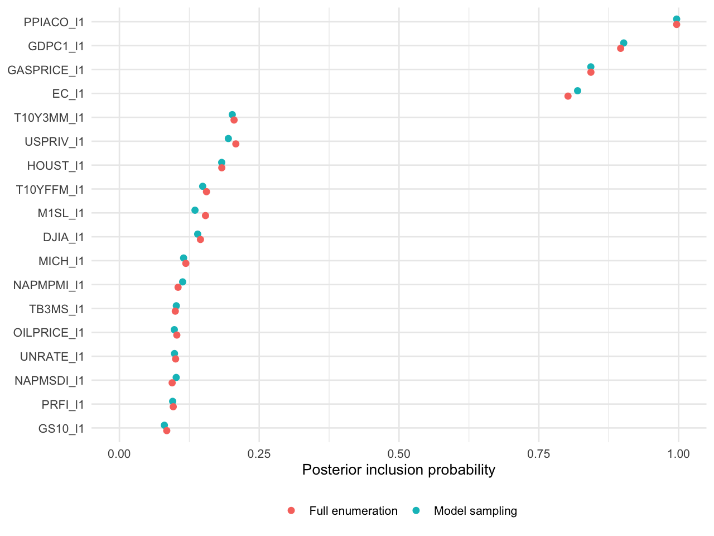
Posterior inclusion probabilities from the sampled run and full enumeration of the one-lag model space. A single sampled run is a comparison, not a convergence guarantee.
The next tables recover the original inspection of the best models using the public topmodels.bma() accessor. The indicator rows show which regressors enter each model. The last row reports relative posterior weights normalized over the 100 retained models, of which eight are displayed. These conditional weights must not be interpreted as posterior probabilities over all 262,144 models. Full-model-space inclusion probabilities are reported above.
retained_model_table <- function(fit, n=8L) {
tab <- BMS::topmodels.bma(fit)
weights <- tab["PMP (Exact)", ]
stopifnot(all(is.finite(weights)), all(weights >= 0), sum(weights) > 0)
weights <- weights / sum(weights)
out <- rbind(tab[fit$reg.names, , drop=FALSE],
"Posterior weight conditional on retained models"=weights)
out[, seq_len(min(n,ncol(out))), drop=FALSE]
}
top_sample <- retained_model_table(bma_sample)
top_enumeration <- retained_model_table(bma_enumeration)
knitr::kable(top_sample,digits=4,caption="Eight best retained models from the sampled run; weights are conditional on the 100 retained models.")| 14021 | 14221 | 16021 | 14121 | 14031 | 14821 | 34021 | 14029 | |
|---|---|---|---|---|---|---|---|---|
| UNRATE_l1 | 0.0000 | 0.000 | 0.0000 | 0.0000 | 0.000 | 0.0000 | 1.0000 | 0.0000 |
| EC_l1 | 1.0000 | 1.000 | 1.0000 | 1.0000 | 1.000 | 1.0000 | 1.0000 | 1.0000 |
| PRFI_l1 | 0.0000 | 0.000 | 0.0000 | 0.0000 | 0.000 | 0.0000 | 0.0000 | 0.0000 |
| GDPC1_l1 | 1.0000 | 1.000 | 1.0000 | 1.0000 | 1.000 | 1.0000 | 1.0000 | 1.0000 |
| HOUST_l1 | 0.0000 | 0.000 | 1.0000 | 0.0000 | 0.000 | 0.0000 | 0.0000 | 0.0000 |
| USPRIV_l1 | 0.0000 | 0.000 | 0.0000 | 0.0000 | 0.000 | 0.0000 | 0.0000 | 0.0000 |
| TB3MS_l1 | 0.0000 | 0.000 | 0.0000 | 0.0000 | 0.000 | 1.0000 | 0.0000 | 0.0000 |
| GS10_l1 | 0.0000 | 0.000 | 0.0000 | 0.0000 | 0.000 | 0.0000 | 0.0000 | 0.0000 |
| T10Y3MM_l1 | 0.0000 | 1.000 | 0.0000 | 0.0000 | 0.000 | 0.0000 | 0.0000 | 0.0000 |
| T10YFFM_l1 | 0.0000 | 0.000 | 0.0000 | 1.0000 | 0.000 | 0.0000 | 0.0000 | 0.0000 |
| M1SL_l1 | 0.0000 | 0.000 | 0.0000 | 0.0000 | 0.000 | 0.0000 | 0.0000 | 0.0000 |
| MICH_l1 | 0.0000 | 0.000 | 0.0000 | 0.0000 | 0.000 | 0.0000 | 0.0000 | 0.0000 |
| PPIACO_l1 | 1.0000 | 1.000 | 1.0000 | 1.0000 | 1.000 | 1.0000 | 1.0000 | 1.0000 |
| DJIA_l1 | 0.0000 | 0.000 | 0.0000 | 0.0000 | 1.000 | 0.0000 | 0.0000 | 0.0000 |
| NAPMPMI_l1 | 0.0000 | 0.000 | 0.0000 | 0.0000 | 0.000 | 0.0000 | 0.0000 | 1.0000 |
| NAPMSDI_l1 | 0.0000 | 0.000 | 0.0000 | 0.0000 | 0.000 | 0.0000 | 0.0000 | 0.0000 |
| OILPRICE_l1 | 0.0000 | 0.000 | 0.0000 | 0.0000 | 0.000 | 0.0000 | 0.0000 | 0.0000 |
| GASPRICE_l1 | 1.0000 | 1.000 | 1.0000 | 1.0000 | 1.000 | 1.0000 | 1.0000 | 1.0000 |
| Posterior weight conditional on retained models | 0.1774 | 0.066 | 0.0482 | 0.0467 | 0.027 | 0.0254 | 0.0232 | 0.0228 |
knitr::kable(top_enumeration,digits=4,caption="Eight best models from enumeration; weights are conditional on the 100 retained models.")| 14021 | 14221 | 16021 | 14121 | 14031 | 14821 | 34021 | 14029 | |
|---|---|---|---|---|---|---|---|---|
| UNRATE_l1 | 0.0000 | 0.000 | 0.0000 | 0.0000 | 0.000 | 0.0000 | 1.0000 | 0.0000 |
| EC_l1 | 1.0000 | 1.000 | 1.0000 | 1.0000 | 1.000 | 1.0000 | 1.0000 | 1.0000 |
| PRFI_l1 | 0.0000 | 0.000 | 0.0000 | 0.0000 | 0.000 | 0.0000 | 0.0000 | 0.0000 |
| GDPC1_l1 | 1.0000 | 1.000 | 1.0000 | 1.0000 | 1.000 | 1.0000 | 1.0000 | 1.0000 |
| HOUST_l1 | 0.0000 | 0.000 | 1.0000 | 0.0000 | 0.000 | 0.0000 | 0.0000 | 0.0000 |
| USPRIV_l1 | 0.0000 | 0.000 | 0.0000 | 0.0000 | 0.000 | 0.0000 | 0.0000 | 0.0000 |
| TB3MS_l1 | 0.0000 | 0.000 | 0.0000 | 0.0000 | 0.000 | 1.0000 | 0.0000 | 0.0000 |
| GS10_l1 | 0.0000 | 0.000 | 0.0000 | 0.0000 | 0.000 | 0.0000 | 0.0000 | 0.0000 |
| T10Y3MM_l1 | 0.0000 | 1.000 | 0.0000 | 0.0000 | 0.000 | 0.0000 | 0.0000 | 0.0000 |
| T10YFFM_l1 | 0.0000 | 0.000 | 0.0000 | 1.0000 | 0.000 | 0.0000 | 0.0000 | 0.0000 |
| M1SL_l1 | 0.0000 | 0.000 | 0.0000 | 0.0000 | 0.000 | 0.0000 | 0.0000 | 0.0000 |
| MICH_l1 | 0.0000 | 0.000 | 0.0000 | 0.0000 | 0.000 | 0.0000 | 0.0000 | 0.0000 |
| PPIACO_l1 | 1.0000 | 1.000 | 1.0000 | 1.0000 | 1.000 | 1.0000 | 1.0000 | 1.0000 |
| DJIA_l1 | 0.0000 | 0.000 | 0.0000 | 0.0000 | 1.000 | 0.0000 | 0.0000 | 0.0000 |
| NAPMPMI_l1 | 0.0000 | 0.000 | 0.0000 | 0.0000 | 0.000 | 0.0000 | 0.0000 | 1.0000 |
| NAPMSDI_l1 | 0.0000 | 0.000 | 0.0000 | 0.0000 | 0.000 | 0.0000 | 0.0000 | 0.0000 |
| OILPRICE_l1 | 0.0000 | 0.000 | 0.0000 | 0.0000 | 0.000 | 0.0000 | 0.0000 | 0.0000 |
| GASPRICE_l1 | 1.0000 | 1.000 | 1.0000 | 1.0000 | 1.000 | 1.0000 | 1.0000 | 1.0000 |
| Posterior weight conditional on retained models | 0.1774 | 0.066 | 0.0482 | 0.0467 | 0.027 | 0.0254 | 0.0232 | 0.0228 |
7 Extend the regression to four lags
The four-lag OLS model includes all 72 macroeconomic predictor columns. These are lags of the macroeconomic indicators; no lagged inflation regressor is added by this code. The larger model has fewer residual degrees of freedom, which makes its in-sample fit a poor substitute for a prediction assessment.
formula4 <- reformulate(all_lag_names,response="CPIAUCSL")
ols4 <- lm(formula4,data=inflation)
summary(ols4)##
## Call:
## lm(formula = formula4, data = inflation)
##
## Residuals:
## Min 1Q Median 3Q Max
## -0.037671 -0.008337 0.000313 0.007581 0.034534
##
## Coefficients:
## Estimate Std. Error t value Pr(>|t|)
## (Intercept) -2.990e-02 1.103e-01 -0.271 0.787445
## UNRATE_l1 2.235e+00 1.399e+00 1.598 0.116176
## EC_l1 -9.678e-01 7.169e-01 -1.350 0.182876
## PRFI_l1 -3.207e-02 1.376e-01 -0.233 0.816658
## GDPC1_l1 1.619e+00 5.422e-01 2.985 0.004314 **
## HOUST_l1 -3.572e-02 4.074e-02 -0.877 0.384667
## USPRIV_l1 1.733e+00 1.319e+00 1.314 0.194529
## TB3MS_l1 5.613e+01 3.490e+01 1.609 0.113767
## GS10_l1 -5.456e-01 3.361e-01 -1.623 0.110582
## T10Y3MM_l1 5.336e+01 3.405e+01 1.567 0.123114
## T10YFFM_l1 1.343e+00 2.523e+00 0.532 0.596653
## M1SL_l1 6.834e-02 1.031e-01 0.663 0.510388
## MICH_l1 -7.531e-01 8.151e-01 -0.924 0.359771
## PPIACO_l1 4.894e-03 1.294e-03 3.781 0.000404 ***
## DJIA_l1 2.863e-03 5.818e-02 0.049 0.960936
## NAPMPMI_l1 -1.881e-03 1.427e-03 -1.318 0.193226
## NAPMSDI_l1 4.556e-04 1.128e-03 0.404 0.687902
## OILPRICE_l1 5.085e-02 2.305e-02 2.206 0.031823 *
## GASPRICE_l1 -6.678e-02 1.874e-02 -3.564 0.000792 ***
## UNRATE_l2 -2.293e+00 1.647e+00 -1.393 0.169655
## EC_l2 5.375e-01 8.446e-01 0.636 0.527308
## PRFI_l2 -2.928e-02 1.352e-01 -0.217 0.829407
## GDPC1_l2 -8.193e-01 8.217e-01 -0.997 0.323354
## HOUST_l2 1.964e-03 4.514e-02 0.044 0.965461
## USPRIV_l2 2.456e+00 1.438e+00 1.708 0.093516 .
## TB3MS_l2 -4.215e+01 4.748e+01 -0.888 0.378741
## GS10_l2 -1.257e-01 3.193e-01 -0.394 0.695470
## T10Y3MM_l2 -3.854e+01 4.625e+01 -0.833 0.408538
## T10YFFM_l2 -4.452e+00 3.075e+00 -1.448 0.153642
## M1SL_l2 -6.424e-02 8.639e-02 -0.744 0.460502
## MICH_l2 -1.326e+00 1.015e+00 -1.307 0.196974
## PPIACO_l2 5.541e-04 1.766e-03 0.314 0.754930
## DJIA_l2 -6.371e-02 5.669e-02 -1.124 0.266199
## NAPMPMI_l2 8.482e-04 1.430e-03 0.593 0.555718
## NAPMSDI_l2 -4.627e-04 1.081e-03 -0.428 0.670499
## OILPRICE_l2 1.480e-02 2.674e-02 0.553 0.582407
## GASPRICE_l2 -3.235e-02 2.215e-02 -1.461 0.150137
## UNRATE_l3 -1.582e+00 1.695e+00 -0.933 0.355093
## EC_l3 4.059e-01 6.939e-01 0.585 0.561082
## PRFI_l3 -1.557e-01 1.348e-01 -1.155 0.253333
## GDPC1_l3 -2.629e-01 7.612e-01 -0.345 0.731216
## HOUST_l3 5.394e-02 3.991e-02 1.351 0.182431
## USPRIV_l3 -8.248e-01 1.281e+00 -0.644 0.522462
## TB3MS_l3 -4.095e+01 4.323e+01 -0.947 0.347873
## GS10_l3 2.336e-01 3.552e-01 0.658 0.513635
## T10Y3MM_l3 -4.129e+01 4.225e+01 -0.977 0.332951
## T10YFFM_l3 5.944e+00 3.361e+00 1.769 0.082822 .
## M1SL_l3 1.142e-01 7.568e-02 1.510 0.137183
## MICH_l3 3.291e-01 1.036e+00 0.318 0.751947
## PPIACO_l3 4.183e-03 1.424e-03 2.938 0.004915 **
## DJIA_l3 3.978e-02 5.969e-02 0.666 0.508052
## NAPMPMI_l3 2.298e-03 1.683e-03 1.366 0.177875
## NAPMSDI_l3 -1.826e-03 9.654e-04 -1.892 0.064126 .
## OILPRICE_l3 5.928e-03 2.835e-02 0.209 0.835197
## GASPRICE_l3 -5.716e-02 2.060e-02 -2.774 0.007675 **
## UNRATE_l4 2.086e+00 1.233e+00 1.691 0.096743 .
## EC_l4 1.715e+00 8.200e-01 2.092 0.041349 *
## PRFI_l4 2.133e-01 1.372e-01 1.555 0.126011
## GDPC1_l4 -3.358e-01 8.412e-01 -0.399 0.691396
## HOUST_l4 -1.432e-02 3.681e-02 -0.389 0.698801
## USPRIV_l4 -5.803e-01 8.055e-01 -0.720 0.474511
## TB3MS_l4 2.701e+01 3.704e+01 0.729 0.469089
## GS10_l4 1.314e-02 7.989e-03 1.644 0.106120
## T10Y3MM_l4 2.323e+01 3.625e+01 0.641 0.524513
## T10YFFM_l4 -1.537e-02 1.933e+00 -0.008 0.993685
## M1SL_l4 4.621e-02 2.851e-02 1.621 0.111081
## MICH_l4 9.441e-01 9.988e-01 0.945 0.348906
## PPIACO_l4 5.351e-04 1.407e-03 0.380 0.705165
## DJIA_l4 7.636e-03 5.785e-02 0.132 0.895494
## NAPMPMI_l4 -7.789e-04 1.526e-03 -0.510 0.611994
## NAPMSDI_l4 -1.425e-03 8.924e-04 -1.597 0.116232
## OILPRICE_l4 2.735e-02 2.371e-02 1.154 0.253955
## GASPRICE_l4 -4.151e-02 1.902e-02 -2.183 0.033581 *
## ---
## Signif. codes: 0 '***' 0.001 '**' 0.01 '*' 0.05 '.' 0.1 ' ' 1
##
## Residual standard error: 0.01863 on 52 degrees of freedom
## Multiple R-squared: 0.7611, Adjusted R-squared: 0.4304
## F-statistic: 2.301 on 72 and 52 DF, p-value: 0.0009658ols_comparison <- data.frame(model=c("One lag","Four lags"),
regressors=c(ncol(X1),ncol(X4)),residual_df=c(df.residual(ols1),df.residual(ols4)),
training_MSE=c(mean(residuals(ols1)^2),mean(residuals(ols4)^2)),
adjusted_R2=c(summary(ols1)$adj.r.squared,summary(ols4)$adj.r.squared))
knitr::kable(ols_comparison,digits=5)| model | regressors | residual_df | training_MSE | adjusted_R2 |
|---|---|---|---|---|
| One lag | 18 | 106 | 0.00040 | 0.22881 |
| Four lags | 72 | 52 | 0.00014 | 0.43038 |
lasso4 <- glmnet::glmnet(X4,y_original,alpha=1,standardize=TRUE,nlambda=100)
cv_enet4 <- glmnet::cv.glmnet(X4,y_original,alpha=.5,standardize=TRUE,
nlambda=100,foldid=folds1)
enet4_selected <- glmnet::glmnet(X4,y_original,alpha=.5,standardize=TRUE,
lambda=cv_enet4$lambda.min)
coef(enet4_selected)## 73 x 1 sparse Matrix of class "dgCMatrix"
## s0
## (Intercept) 0.025047600
## UNRATE_l1 .
## EC_l1 .
## PRFI_l1 .
## GDPC1_l1 .
## HOUST_l1 .
## USPRIV_l1 .
## TB3MS_l1 .
## GS10_l1 .
## T10Y3MM_l1 .
## T10YFFM_l1 .
## M1SL_l1 .
## MICH_l1 .
## PPIACO_l1 0.000351257
## DJIA_l1 .
## NAPMPMI_l1 .
## NAPMSDI_l1 .
## OILPRICE_l1 .
## GASPRICE_l1 .
## UNRATE_l2 .
## EC_l2 .
## PRFI_l2 .
## GDPC1_l2 .
## HOUST_l2 .
## USPRIV_l2 .
## TB3MS_l2 .
## GS10_l2 .
## T10Y3MM_l2 .
## T10YFFM_l2 .
## M1SL_l2 .
## MICH_l2 .
## PPIACO_l2 .
## DJIA_l2 .
## NAPMPMI_l2 .
## NAPMSDI_l2 .
## OILPRICE_l2 .
## GASPRICE_l2 .
## UNRATE_l3 .
## EC_l3 .
## PRFI_l3 .
## GDPC1_l3 .
## HOUST_l3 .
## USPRIV_l3 .
## TB3MS_l3 .
## GS10_l3 .
## T10Y3MM_l3 .
## T10YFFM_l3 .
## M1SL_l3 .
## MICH_l3 .
## PPIACO_l3 .
## DJIA_l3 .
## NAPMPMI_l3 .
## NAPMSDI_l3 .
## OILPRICE_l3 .
## GASPRICE_l3 .
## UNRATE_l4 .
## EC_l4 .
## PRFI_l4 .
## GDPC1_l4 .
## HOUST_l4 .
## USPRIV_l4 .
## TB3MS_l4 .
## GS10_l4 .
## T10Y3MM_l4 .
## T10YFFM_l4 .
## M1SL_l4 .
## MICH_l4 .
## PPIACO_l4 .
## DJIA_l4 .
## NAPMPMI_l4 .
## NAPMSDI_l4 .
## OILPRICE_l4 .
## GASPRICE_l4 .knitr::kable(selected_coefficients(cv_enet4,"lambda.1se","Four-lag Elastic Net"),digits=5)| method | rule | term | coefficient |
|---|---|---|---|
| Four-lag Elastic Net | lambda.1se | (Intercept) | 0.02544 |
The four-lag fit, plot and coefficient extraction all refer to cv_enet4; they do not reuse the one-lag CV object. The Lasso path is shown separately because it has \(\alpha=1\), while the selected Elastic Net has \(\alpha=0.5\).
ggplot(glmnet_path_data(lasso4,"Four lags"),aes(lambda,coefficient,group=term)) +
geom_line(colour="#9e1b32",alpha=.5) + scale_x_log10() +
labs(x=expression(lambda),y="Coefficient")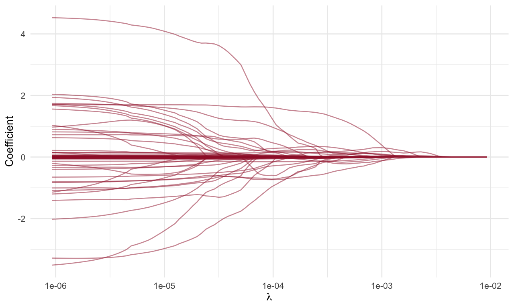
Four-lag Lasso path on the 72-predictor design.
ggplot(glmnet_cv_data(cv_enet4,"Four lags"),aes(lambda,mse)) +
geom_ribbon(aes(ymin=mse-se,ymax=mse+se),fill="#9e1b32",alpha=.15) +
geom_line(colour="#9e1b32") + geom_vline(xintercept=cv_enet4$lambda.min,linetype=2) +
scale_x_log10() + labs(x=expression(lambda),y="Cross-validated MSE")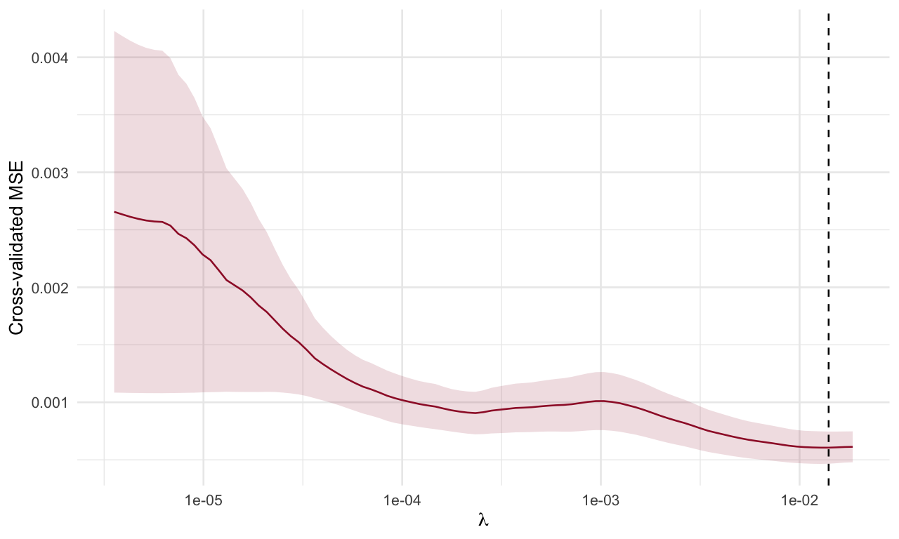
Ten-fold CV for the four-lag Elastic Net. The ribbon is one glmnet standard error; the dashed line marks lambda.min.
8 The original fdaSP fit and cross-validation
We now reproduce the fdaSP portion on the full four-lag design, preserving its automatic standardization and five-fold CV. The exported fdaSP::lmSP_cv replaces the unnecessary triple-colon call. We use the CV grid again for the full path so that the selected value can be located without ambiguity.
original_control <- list(adaptation=TRUE,rho=1,maxit=3000,
reltol=1e-4,abstol=1e-4,mu.ada=10,tau.ada=2,print.out=FALSE)
set.seed(418)
original_fdasp_cv <- fdaSP::lmSP_cv(X=X4,y=y_original,penalty="LASSO",
standardize.data=TRUE,intercept=FALSE,cv.fold=5,nlambda=30,
control=original_control)
original_fdasp_path <- fdaSP::lmSP(X=X4,y=y_original,penalty="LASSO",
standardize.data=TRUE,intercept=FALSE,lambda=original_fdasp_cv$lambda,
control=original_control)
stopifnot(all(original_fdasp_path$convergence==1),
all(original_fdasp_cv$convergence==1),
all(is.finite(original_fdasp_path$sp.coef.path)))The mse.sd component is the standard deviation of fold MSEs in this implementation, not the standard error returned by glmnet. We retain the original mean-plus/minus-mse.sd band but label it accordingly. It is not a confidence band for the prediction function. The different preprocessing, folds and loss conventions also prevent a direct ranking based solely on the numerical CV values printed by the two packages.
fdasp_cv_plot <- data.frame(lambda=original_fdasp_cv$lambda,
mse=as.numeric(original_fdasp_cv$mse),sd=as.numeric(original_fdasp_cv$mse.sd))
ggplot(fdasp_cv_plot,aes(lambda,mse)) +
geom_ribbon(aes(ymin=mse-sd,ymax=mse+sd),fill="#9e1b32",alpha=.15) +
geom_line(colour="#9e1b32") + geom_vline(xintercept=original_fdasp_cv$lambda.min,linetype=2) +
scale_x_log10() + labs(x=expression(lambda),y="Cross-validated MSE (package scale)")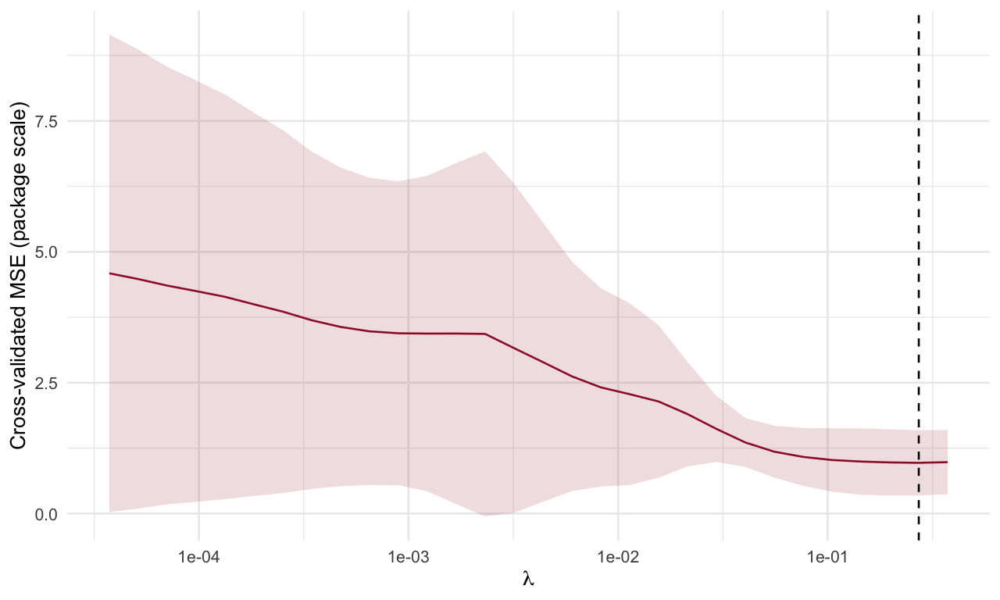
Original fdaSP workflow: five-fold CV error plus or minus one fold-error standard deviation, with the selected lambda marked.
fdasp_coefficients <- as.matrix(original_fdasp_path$sp.coef.path)
fdasp_original_path_plot <- data.frame(
lambda=rep(original_fdasp_path$lambda,ncol(fdasp_coefficients)),
coefficient=as.vector(fdasp_coefficients),
term=rep(colnames(X4),each=nrow(fdasp_coefficients)))
ggplot(fdasp_original_path_plot,aes(lambda,coefficient,group=term)) +
geom_line(colour="#9e1b32",alpha=.55) +
geom_vline(xintercept=original_fdasp_cv$lambda.min,linetype=2) +
scale_x_log10() + labs(x=expression(lambda),y="Coefficient")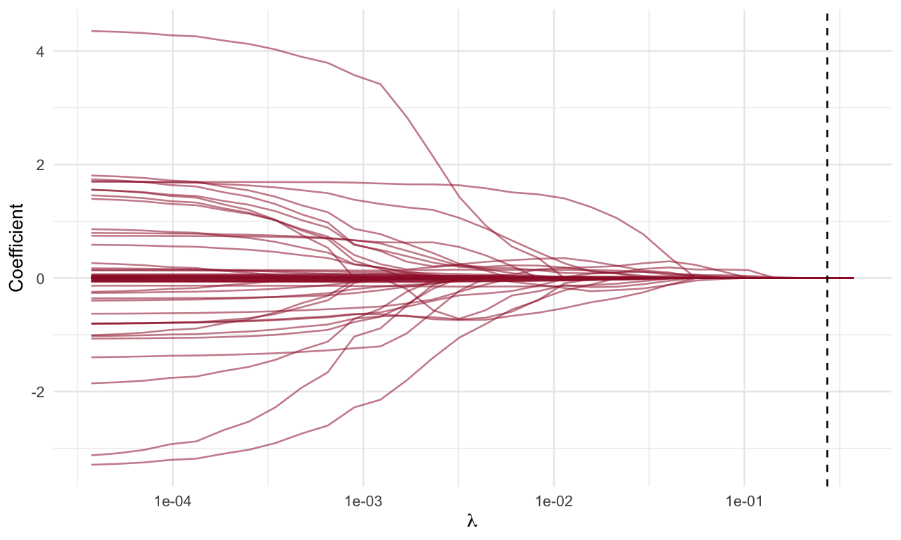
The fdaSP coefficient path from the original four-lag example, evaluated on the same lambda grid as its CV fit.
9 What was clarified during restoration
All substantive analyses in the original R Markdown are represented above. The main corrections are consistent use of one- versus four-lag designs, matching \(\alpha\) between CV and refitting, explicit lambda.min versus lambda.1se, and the distinction between the two packages’ uncertainty bands. The supplied data determine the reported date range. Ridge-pilot adaptive Lasso is shown in addition to the original OLS-pilot fit, and the BMS retained model count is aligned with the original comment about 100 models.
The old “Real estate dataset” heading had no data, code or results beneath it. No real-estate application is invented here. The original source remains unchanged in archive/original-README.Rmd; the chronological analysis in the next chapter is an addition to this restored workflow.